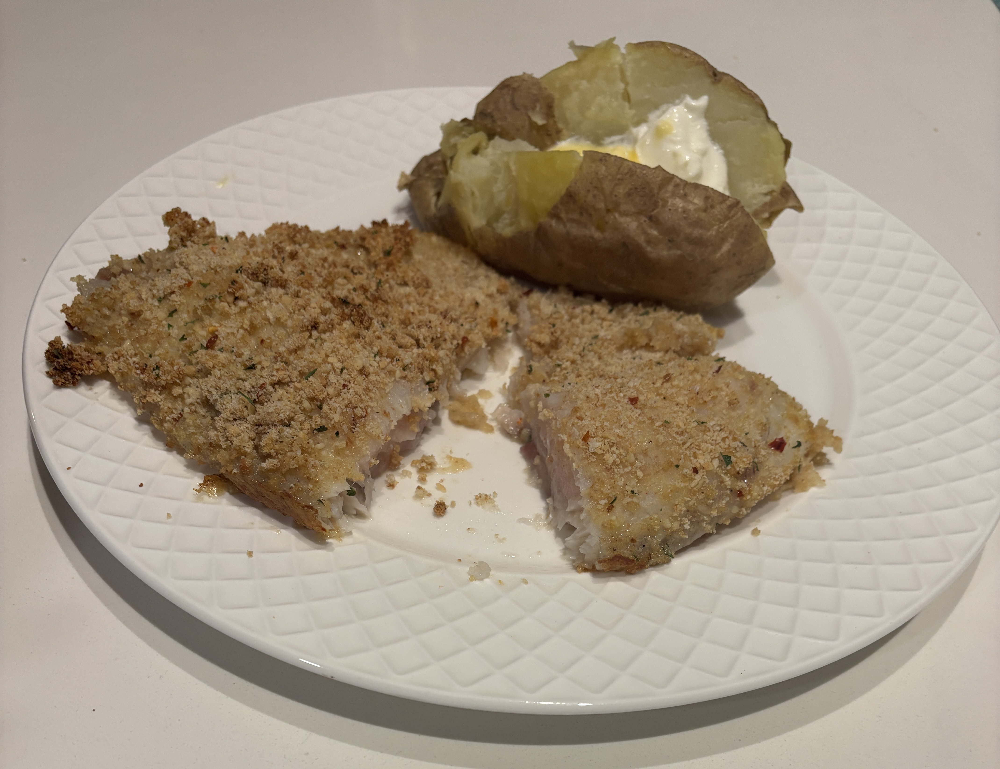

Home
Parmesan crusted fish

Ingredients
- 4 fillets or about 1.5 lbs of white fish (note tillapia sometimes has an earthy taste)
- 4 large eggs whisked
- 1/4 cup grated parmesan cheese
- 1 cup italian style breadcrumbs
- Salt and pepper
Steps
- Preheat the oven to 425 degrees
- Line a baking sheet with parchment paper
- In a medium bowl mix the salt (3/4 tsp), grated parmesan cheese (1/4 cup), breadcrumbs (1 cup), and ground black pepper to taste.
- In another bowl with the beaten large eggs, dip the fish on both sides so the fish is evenly coated with egg.
- Then press the fish into the breadcrumbs mixture on both sides so the fish is evenly coated. Repeat for all other fillets.
- Place fish on the baking sheet and bake in the oven for 16-18 min turning halfway through until browned and flakey and the internal temp reaches 140 degrees.